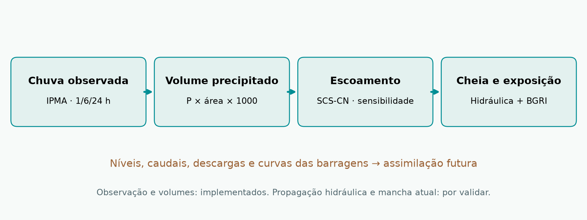
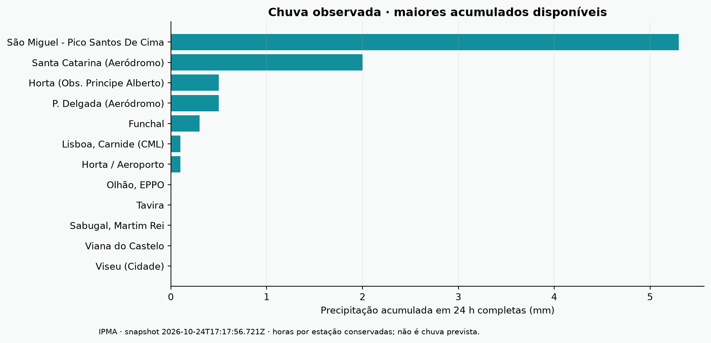
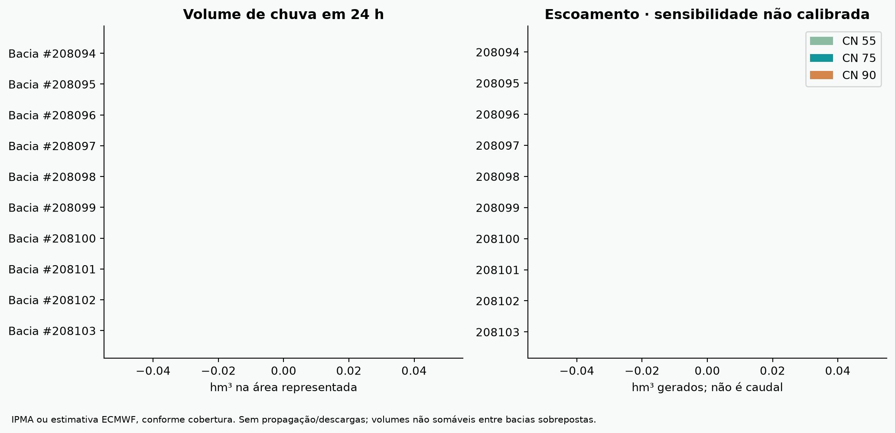
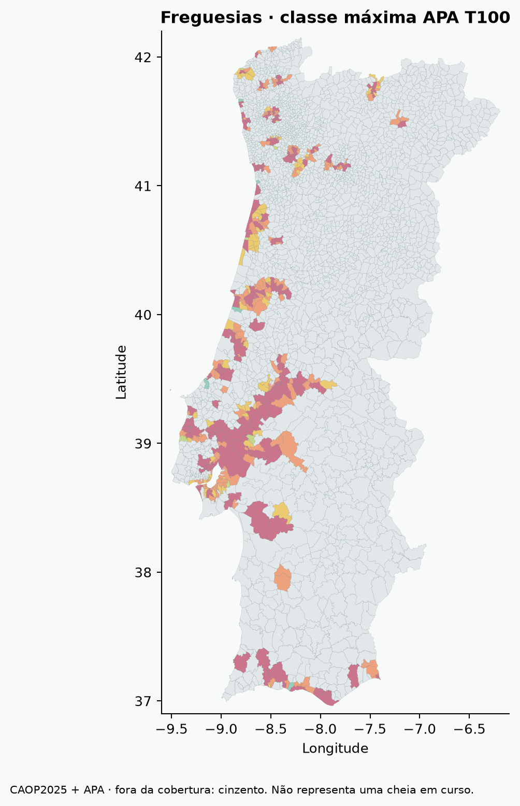
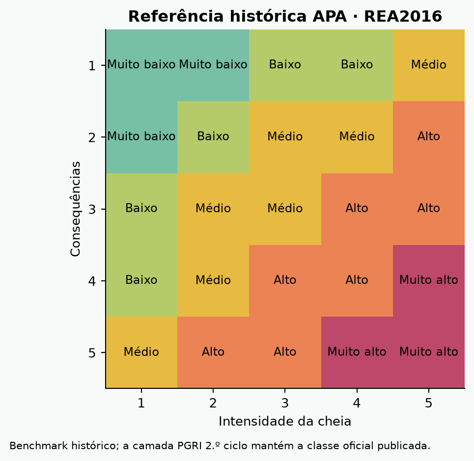
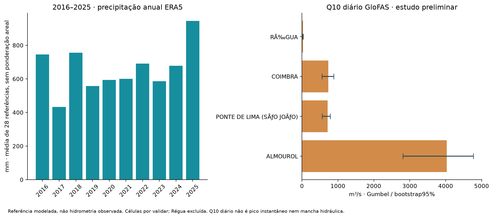

RELATÓRIO TÉCNICO · 24 OUTUBRO 2026 · V0.1 EXPERIMENTAL
Implementação de observações, cenários territoriais e simulação de volumes. Este relatório descreve o protótipo e o estudo necessário para o validar, sem apresentar resultados de validação ainda não realizados.
227 estações IPMA; 111 com acumulado completo de 24 h no snapshot. 262 bacias APA: 19 com média de estações interiores sincronizadas e 243 com estimativa de precipitação ECMWF. As duas fontes estão identificadas separadamente.


Dados: 2026-10-24T17:17:56.721Z. As estações podem ter diferentes horas de observação; o mapa indica a hora individual.
Volume precipitado = P(mm) × A(km²) × 1000 m³. Escoamento SCS-CN com CN55/75/90 e abstração inicial 0,2S. Os três valores representam sensibilidade ao parâmetro, não quantis de probabilidade nem cenários T10/T100.

| Bacia APA | Estações | P24 mm | V chuva hm³ | V escoamento CN75 hm³ |
|---|---|---|---|---|
| 208094 | 2 | 0.0 | 0.000 | 0.000 |
| 208095 | 0 | 0.0 | 0.000 | 0.000 |
| 208096 | 2 | 0.0 | 0.000 | 0.000 |
| 208097 | 1 | 0.0 | 0.000 | 0.000 |
| 208098 | 0 | 0.0 | 0.000 | 0.000 |
| 208099 | 0 | 0.0 | 0.000 | 0.000 |
| 208100 | 2 | 0.0 | 0.000 | 0.000 |
| 208101 | 0 | 0.0 | 0.000 | 0.000 |
| 208102 | 0 | 0.0 | 0.000 | 0.000 |
| 208103 | 1 | 0.0 | 0.000 | 0.000 |
3049 freguesias CAOP2025. A BGRI2021 agrega 10,343,066 residentes nacionais, com crianças de 0–14 e população de 65+ anos. 2726 freguesias têm correspondência geométrica ≥99,5% com CAOP2021; 323 requerem harmonização. A compatibilidade geométrica é um critério exploratório, não certificação oficial de correspondência.
No mapa, o botão de exposição consulta subsecções BGRI, recorta a freguesia e a mancha de cenário e estima residentes e grupos etários por ponderação de área, assumindo distribuição uniforme. Esse pressuposto pode produzir erro importante em áreas rurais; a investigação deverá usar edifícios residenciais e intervalos de incerteza. Crianças + 65+ são grupos etários distintos, não uma contagem completa de vulnerabilidade.


A matriz histórica APA é o benchmark. A nova proposta deverá avaliar separadamente intensidade física, probabilidade, exposição e suscetibilidade. O protocolo no repositório define comparação de modelos, calibração por bacia, validação por evento e critérios antes de qualquer utilização operacional.
66 registos recolhidos de fontes primárias, incluindo boletim mensal SNIRH de 2026-09 e cinco albufeiras ARBCAS com data diária. Armazenamento e capacidade não permitem inferir a descarga. Sem afluência, descarga, curvas cota-volume e regras operacionais, a propagação nas barragens não é calculada.
Meta Population/Movement During Crisis exige acordo de acesso; não temos dados Portugal ligados. MEO anuncia API e NOS/Vodafone oferecem produtos agregados. O formato partilhado do repositório distingue utilizadores, dispositivos, índices, pessoas estimadas e fluxos. Não se convertem automaticamente utilizadores em população nem hóspedes mensais em pessoas simultaneamente presentes.
Foram efetivamente obtidos 102 284 valores de precipitação diária ERA5: 28 referências regionais com 3 653 dias completos, de 1 janeiro2016 a31 dezembro2025. IDW3 fornece estatísticas estimadas para as262bacias. Não são séries de estações nem precipitação areal validada.

GloFAS via Open-Meteo, máximos anuais2016–2025, Gumbel por momentos. Intervalos bootstrap com1000réplicas. Os valores não são caudais de pico instantâneo nem cotas de inundação.
| Referência | Q10 diário (m³/s) | Intervalo bootstrap95% |
|---|---|---|
| ALMOUROL | 4030.3 | 2811.7–4772.0 |
| PONTE DE LIMA (SÃO JOÃO) | 714.4 | 564.2–790.0 |
| PONTE SANTA CLARA COIMBRA | 732.8 | 555.2–883.9 |
| RÉGUA | Excluído: célula não representativa | Por rever |
A referência Régua devolveu um caudal incompatível com a interpretação do rio pretendido e foi excluída. As restantes referências requerem também confirmação da célula e comparação com hidrometria antes de uso operacional. Dez máximos anuais são uma base curta para estimar extremos.
O GitHub Actions recolhe observações e recalcula volumes de 15 em 15 minutos, sujeito a atrasos; o IPMA é horário. O navegador atualiza a consulta a cada 5 minutos. Há testes de somas temporais, falhas, conservação de volumes, matriz e regras de mobilidade. Os dados originais preservam a sua data. A validação contra cheias históricas e o teste prospetivo continuam por executar.
As figuras são um snapshot da execução inicial, não um relatório vivo. As observações atuais estão no mapa e em data/simulation.json.